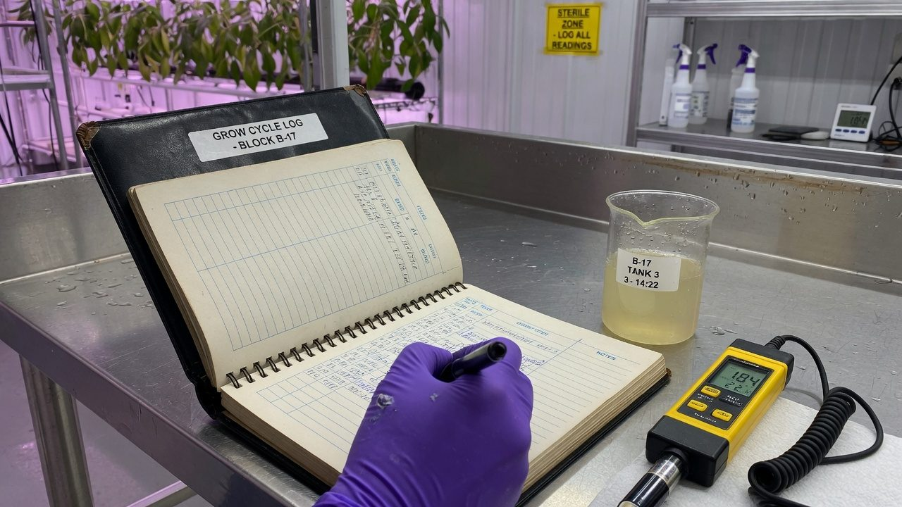
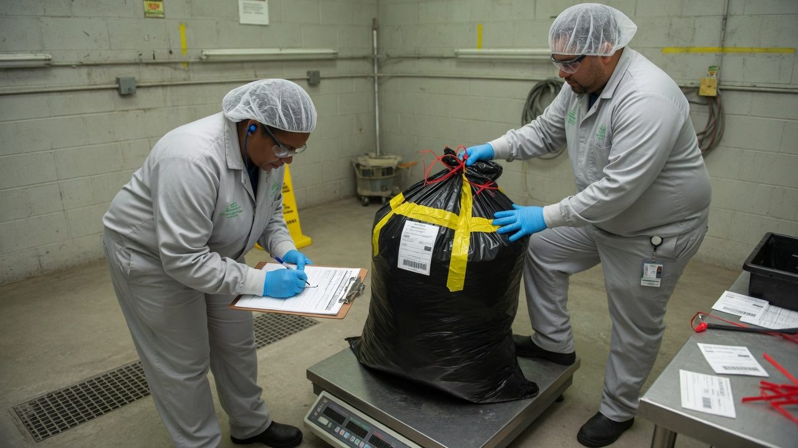

Compliance, licensing and track-and-trace
A cultivation facility with a license must have many documents and records. After you read this paper, you will know how to read and examine your license. You will know how to trace a batch from the mother plant to the package lot. You will know how to do an inventory reconciliation, find the cause of each variance and write records that an auditor accepts. You will also know how to record a deviation. Then the deviation does not become a large problem.
Purpose and scope
This paper shows in general terms how licensing, traceability and records operate for cannabis. Thus you know the terms, and how the system operates, before you read the documents of your regime. This paper is not legal advice and is not regulatory advice. It does not give information on a specified facility.
Regimes are different in each country and they change with time. In August 2026, we examined the information about each regime in this paper. The regimes will change, and then this information will not be correct. Your license and the information that your regulator gives at this time are more important than this paper. The legal advice from your lawyer is also more important than this paper.
Plant growth is one half of the task. The other half is to show facts to a person who was not there. You must show, on paper and at all times, where each gram came from and where it went. You must also show that you obeyed the written procedures of your facility. This paper is about the system of records that shows these facts.
This paper is for a person who has new compliance tasks and also applies water to the plants. Examples are an operator with a first license and a small group of personnel in which the head grower is also the quality manager. A technician who speaks with an auditor for the first time can also use this paper. It is not necessary to know compliance before you read this paper. This paper gives information about each term before it uses the term.
This paper shows the license and its life. It shows the communication between your facility and the regulator. It shows batches and lots, and the genealogy that connects all records. It shows seed-to-sale traceability and the regular reconciliation of the inventory. It shows records that an auditor accepts. It shows how to record deviations with a minimum of documents.
It gives information about the boundary between GACP and GMP, and about quality agreements. It shows security and destruction. It shows how to prepare for a recall. It shows the steps of an audit day. At the end, there are two worked examples in general terms, from New Zealand and Australia.
Definitions
When two persons use the same term for different items, a problem occurs in the compliance work. These definitions are general. The definitions in the regulations of your regime are more important than these definitions. When you start a facility, one task is to write the definitions that you use.
Evidence and limitations
We want each paper to be correct. Thus we examine each paper for information that is not solid. This information comes from the view of one grower, from a small number of sources, or from grower methods that have no controlled test. We identify this information, and we do not show it as solid.
Frequently there is no paper for the decision that you must make. Then we use the reports of other growers and the methods that work in the rooms that we know. This information can help you, but it is not the result of a laboratory test. Use the methods that work for your plants, for your room and for your meters. If a table does not agree with your crop, use the data from your crop and record the difference.
- The primary definitions and the units of measurement in the paper
- Safety limits that have a citation to a regulation or a specification
- Target ranges for light, climate and feed in each stage. They are start values that you can change.
- SOPs that work in many rooms, but you must adjust them for your genetics and meters
- A number for yield or potency that you will always get, with no test at many sites
- Controller setpoints from a different facility, with no new calibration
If you find an error, make a report. We will correct it. Make the report on GitHub, with the name of the paper and the information that is incorrect. If you have a source, include it: Make a report of an accuracy problem. The regulations, labels and licenses of your area always override each procedure in these papers. The label weak in a paper shows the points where the risk of an error is highest.
Primary task of compliance: control with records
Each regulation in each cannabis regime tells you to do one primary task: show control. Control of the material is the first part. Material comes into the facility, moves in the facility and moves out of the facility only when the records show it. Control of the work is the second part. The work on the plant obeys written procedures. The records must show this control to a person who was not there and who accepts only the records.
Most new operators give too much work to layer one, the license. They do not give sufficient work to layer three, the records. This method is incorrect. A regulator does not usually remove a license on the day that it gives the license. The regulator removes it after some years, in layer three, when an auditor wants a basic fact that the documents cannot show.
In GMP for medicines, documents are not a secondary task. The quality system includes the documents[1]. Cannabis regimes use the same structure.
Write each record for a person who was not there. This person does not know the facts, examines the record carefully and accepts only the facts that the record shows. If this person can find the facts from your records only, your records are correct. The facts are the person, the task, the time, the quantity and the cause. If you must stay near the record and tell the facts, it is not a record. It is a note for you.
License activities, conditions and renewals
A cannabis license is not one approval. It is a group of activities with names. The activities have conditions. For example, the regime of New Zealand makes each license from some of these activities: cultivation, nursery (the supply of seeds and propagation material), research, possession for manufacture, and supply[2].
In December 2021, Australia changed its Commonwealth structure to one medicinal cannabis license. This license can include cultivation, production, manufacture and research, with permits in the limits of the license[3]. The names are different in the two regimes. The structure is the same in almost all regimes: activities plus conditions plus quantities.
Read your license as a system with these parts:
Two methods prevent most problems with a license. The first method is a compliance calendar. The compliance calendar has each end date, each renewal period, each date for a report and each fee. Set alerts for 90, 60 and 30 days before each date. A renewal is an easy task. If you do not make the renewal on time, the operation stops.
The second method is to make variations before the change, not documents after the change. If you want to add a room, an activity or a key person, the general instruction is the same in all regimes. Get the approval of the regulator first. Then do the change. Operators who do this incorrectly usually know the instruction. They think that no person will find the error.
Make a paper copy of the license. Read each condition to the personnel who operate the rooms. Operators frequently find conditions in the license that they did not know. The usual cause is that the person who made the application is not at the facility at this time. No other person knows the conditions.
Inspections, notifications and variations
The regulator is not a customer. The regulator is not against you. The regulator is external quality assurance with the authority of the regulations. The task of the regulator is to make sure that you have control. Each item that the regulator wants to examine is for this task.
In New Zealand, this function is in a dedicated agency in the Ministry of Health. The agency operates the scheme and its licensing[5]. In Australia, the function is in the Office of Drug Control at the Commonwealth level[4]. In all regimes, there are three types of communication between you and the regulator:
| Type | Direction | Typical triggers | Primary instruction |
|---|---|---|---|
| Notification | You → them | Theft of material, missing material, security incidents, important deviations, changes to key persons or to other facts about the licensee | Tell the regulator before the regulator wants the information. For the regulator, concealment is much worse than an error. |
| Inspection | Them → you | A scheduled cycle, the approval or renewal of a license, a complaint, or the same problem in many of your reports | Tell the inspector only the facts that you know. If you are not sure, tell the inspector: ‘I will examine this and write to you.’ |
| Variation | You → them | New rooms, new activities, new responsible persons, or changes to the security or to the procedures | Get approval before you make the change. A variation after the change is a breach. |
Your communication with the inspector during an inspection is more important than most operators think. Do not tell the inspector during the inspection that a finding is incorrect. If you think that a finding is incorrect, write to the regulator after the inspection. Give records that show the facts. Write notes of all the information that the inspector tells you.
Make sure that you can correct each finding. If a finding is too general, tell the inspector and continue until you can correct it. Write to the regulator before the date that the regulator gives. Give a date for each task that you will do. Then do the tasks.
A finding that occurs again at the next inspection is worse than the first finding, because it shows if your system corrects its errors. Regulators want to know this fact most of all.
An example is ‘we usually record that’. The term ‘usually’ shows that the written procedure and the work are different, and then the inspector knows the difference. If the work is different from the SOP, correct the SOP or the work. Use a change note. Do this before a different person finds the difference.
Batch and lot traceability
A batch is a specified quantity of material that comes from the same procedure at the same time. Thus the material is the same in all parts. One test result, one record and one decision are then correct for all of the batch. Traceability is correct only when each batch is the same in all parts.
In a grow room, plants that you start together and that get the same treatment are a batch. When the treatment is different, you have two batches. Examples are a different room, a different feed, or a spray on some plants and not on other plants. You have two batches also if you do not record the difference. Make the documents agree with the plants, and not the plants with the documents.
GMP quality systems give a careful definition of batch and lot. In these systems, the traceability must include all material that goes into each batch[6]. Small operators frequently have problems not because their definitions of batches are incorrect, but because they put batches together and divide batches without a record.
Thus the records of one plant are important. In the genealogy, each record is also part of the records of all the batches and lots that follow it. The spray on the mother plant is part of the pesticide records of the package lot, four steps after the mother plant. A CoA for a package lot shows the facts about the lot only if the sequence before it has no gap.
The opposite is also correct. A missing record causes a problem for all the material after it, because you cannot show that an event did not occur. If the spray log has a gap of three weeks, you cannot show that you did not spray that crop.
- Make IDs that a person can read and that are different for each batch. An example is the ID CL-2603 (clones, week 26, batch number 2003). This ID is better than ‘the back table’ and better than a UUID. You can use a different system for IDs. Write your system for IDs in your documents.
- To divide a batch, or to put batches together, is an event. If you put two harvest lots together in one dry lot, record the change. Record the weight before the change and the weight after the change. Do not do it without a record.
- Do not let material stay without an ID, also for a short time. Containers of wet trim with no label are where traceability stops.
When a problem occurs, for example a test with an unsatisfactory result, a pest or a possible contamination, the full batch has the problem. The cause is that the batch is the largest unit that your records can show. Small batches with a correct definition decrease the damage. With small batches, you discard only the small batch. With one large batch that has a general definition, one unsatisfactory test can cause you to discard the full room.
Seed-to-sale traceability and reconciliation
Track-and-trace is a continuous inventory system for a controlled substance. It has three parts: identification, events and a ledger. Each plant and each package has an identification, which is a tag or a UID. You record each event when it occurs. The events are each movement, each change of the material, each sample and each destruction.
The ledger contains all of the records. The ledger can be a system that the regulator tells you to use, commercial software, or a paper logbook. The method is the same for all of them.
The US state model is a good worked example. Some systems, for example METRC, give tags for plants and tags for packages. Licensees record growth stages, harvests, changes of the material, transfers and destructions with these IDs, in the time periods that the system gives[7]. In California, each licensee with a commercial license must record all cannabis activity, from cultivation to sale, in the track-and-trace system of the state, CCTT-Metrc. The system uses an identification that is different for each plant and package[8].
In New Zealand and Australia (in 2026), there is no ledger of this type that the state operates. The same functions are in your records and in the reports that you send to the regulator. The software is different in each regime. The terms and the structure are the same for all regimes.
These methods are correct for all software:
- The stock in the room must be equal to the ledger. The room and the ledger must show the same facts at all times. A gap between them, in each direction, is a finding.
- Record each event when it occurs, at the location where it occurs. If you record the movements of the day at 5 pm, and you did not record them when they occurred, you cause drift.
- Weigh the material at each change. Record the wet weight at harvest and the dry weight after drying. Record the weight of waste at trim and the net weight at packaging. The differences show the quantity of moisture and the quantity of waste. Auditors examine these differences carefully.
- Material goes from the facility only as a recorded transfer, a recorded sample or a recorded destruction. There is no fourth type. ‘I gave some to the person at the laboratory’ is a sample with an entry in the log, or it is diversion.
- Write the manifest before the material moves. The manifest gives the material, the quantity, who sends it, who receives it and the carrier. When the material comes to the site that receives it, the two sites compare the material with the manifest.
A spreadsheet or a paper ledger can be correct in a small facility if you obey these conditions. You make each entry at the time of the event. You know who made each entry. You keep a copy of the ledger. No person changes an entry without a record.
The tool is not usually the problem. A track-and-trace system with no new data until Friday causes risk, also if the cost of the system was high.
Inventory reconciliation and drift
Inventory reconciliation is an audit test. Each person can do the test and read the result. The ledger shows one quantity, the scales show a different quantity, and you must find the cause of the difference. Thus a variance with no known cause is a primary cause of an unsatisfactory audit for a small operator. The test is very easy to do, and falsification of the result after the event is not easy.
The causes of drift are not unusual. One cause is that the moisture in the flower decreases during curing and no person records the change of moisture. A second cause is that personnel put trim in the bin and do not record the weight. A third cause is that QC samples and laboratory samples do not go into the ledger. A fourth cause is that personnel record the wet weight in one unit and the dry weight in a different unit. A fifth cause is that, on the harvest day, material moves between rooms faster than personnel write the movements.
No cause in this list is diversion. In the records, diversion and each cause in this list show the same data. In a regime for controlled substances, missing material with no known cause is possible diversion, until you show that it is not. When the state auditors of Oregon examined their system for recreational cannabis, they found two primary problems when the system must find diversion. The system uses data from reports that the operators write, and the quality of the data in the track-and-trace system is unsatisfactory[9].
| Item | Quantity | Source |
|---|---|---|
| Opening stock (dried flower) | 12.40 kg (27.3 lb) | Last stock count that you examined |
| + In: dried flower from the new harvest | 9.60 kg (21.2 lb) | Dry-room log with dates |
| − Out: transfers to the processor | 4.80 kg (10.6 lb) | Manifests with the signatures of the two sites |
| − Out: destruction of waste | 1.20 kg (2.6 lb) | Destruction records, witnessed |
| − Out: lab samples | 0.03 kg (1.1 oz) | Sample log with lot IDs |
| = Calculated stock | 15.97 kg (35.2 lb) | Calculated from the items above |
| Counted stock | 15.71 kg (34.6 lb) | Two persons, on the same day |
| Variance | −0.26 kg (9.2 oz), −1.6% | Examine, find the cause and record it, on the same day |
The correction is a regular schedule and correct records. Count one area each week and count the full inventory each month. Write an investigation for each variance on the day that you find it. Do this also if the result is: ‘The moisture decreased in the typical range. We changed the typical value.’ Give the ledger one owner.
Also write the value that you use for the change of moisture. For example, you can write that the weight decreases by 75–80% from the wet weight to the dry weight. Then the largest change of weight with a known cause is not a gap in your records.
Do not change the ledger to agree with the stock count without a recorded investigation. A person can think that this change is a correction. In a ledger for controlled substances, it is falsification.
You remove the record of the difference. You replace it with a record that shows that all numbers agreed. An auditor accepts small variances that have a written cause. An auditor does not accept a ledger that you made clean.

Records for an audit and ALCOA+
Regulators in all countries use the same definition of a good record. The usual name of this definition is ALCOA. The properties are Attributable, Legible, Contemporaneous, Original and Accurate. Personnel also add Complete, Consistent, Enduring and Available (ALCOA+). The US FDA uses these properties in its document about data integrity for the manufacture of medicines[10]. Cannabis auditors use the same structure without a change.
These methods are for a small facility:
- Use a logbook with a number on each sheet, or a digital system that records each change. Loose sheets of paper, and spreadsheets that a person can change without a record, make an auditor think that you changed the records.
- Write in the work area, not in a different room. A log that hangs in the work area is better than good software in a different room. It makes the correct procedure the easiest procedure.
- To correct an entry: make a strike-through with one line, write your initials, the date and the cause. You can read the incorrect value below the strike-through. Do not use a pencil or correction fluid. Do not remove sheets from the logbook. Do not put a copy of records with errors in a new logbook. The first record with the errors is the record.
- Do not keep a field empty. Make a strike-through on each field that does not apply. An auditor can think of the worst cause for an empty field.
- Keep records for years, not for months. The minimum period is different in each regime. It is usually in the conditions of your license. The storage of records must continue to be available when personnel change and when a device does not operate.
The property Contemporaneous causes the most problems. The cause is that a backfilled record shows signs. An example is a week of entries that one person wrote with one pen, in one handwriting and at one time. The sheets are clean and the times are all round numbers. A second example is a digital log in which twenty entries have almost the same system time on the night before the inspection.
Auditors use the methods of forensic document examination when they examine logbooks. If an auditor finds a backfilled record, the result is worse than for a gap that you tell the auditor about. A gap causes one finding. A backfilled record causes the auditor to reject all your other records.
For each usual task, select the minimum correct record, which is one entry with five fields. Make the form short. You can then complete it in less than one minute. A compliance system is defective at the point where the work for the record is more than the work for the task.
Deviations and corrective actions
A deviation is each difference between your work and your written procedure. Some examples: the dehumidifier stopped in the night, or the feed mixture had an incorrect EC. Other examples: personnel sprayed the incorrect room, or a supply of material came with no documents. The deviation is not the primary problem. The primary problem is a deviation that you did not record, because then your system does not find its deviations. To find deviations is the primary task of a quality system[6].
| Field | Contents |
|---|---|
| The event | Write only the facts. Do not write who is at fault. |
| Who found it, and when | Date, time, initials |
| Batches and material with the deviation | Always write the IDs. The IDs connect the log to the product. |
| First correction | The tasks that you did in the first hour |
| Effect on the product | Decision for each batch: continue, hold, lower the grade, or send to destruction. |
| Root cause | For an important deviation: find the cause in the system that let it occur. |
| Change to prevent a new deviation | SOP changed, alarm added, training completed, with dates |
| Completed by and examined by | A second person makes sure, some weeks after, that the problem does not occur again |
Set the depth of the record for the size of the deviation. A check that you did not do on one day gets a record of three lines, and you complete it on the same day. A feed from the incorrect tank that touched two flowering batches gets a check of the effect on the product, and a root cause.
In your procedure, give each deviation a type: small, important or very important. Then the procedure gives the depth of the record. The depth does not change with the decision of a person at that time. An auditor does not want a facility with no deviations. The auditor wants records that show that you find deviations, examine the effect on the product and complete the loops.
Each facility has deviations. A log with no entries does not show a facility with no errors. It shows that ‘no person examines the facility’, or that ‘personnel correct problems without a record’. A good log with many small deviations that personnel completed correctly is one of the best documents that you can give to an inspector.
GACP, GMP and quality agreements
Two systems apply from seed to medicine. GACP (Good Agricultural and Collection Practice) is for the cultivation, harvest and primary processing of plants for medicine. It includes the identification of the plant, hygiene, the materials that you apply to the plants, documents, and traceability at the cultivation site. The primary document is the guideline of the WHO of 2003[11].
The European medicines regulator has a GACP guideline for herbal starting materials. In 2025, the regulator changed this guideline. The new guideline includes cultivation in a room with a controlled environment[12].
GMP (Good Manufacturing Practice) is for the change of this material into a medicine. It includes validated processes, batch manufacturing records, QC release, and a quality unit that operates independently[1]. The PIC/S GMP guide aligns the GMP procedures of the inspection authorities of many countries. These include the authorities of New Zealand and Australia[6].
The position of the boundary is different in each regime, and it is important for your business. Cultivation, drying and trimming are usually in GACP. Extraction, formulation and packaging of the medicine are in GMP. For example, the TGA of Australia uses GMP for the manufacture of the product. Cannabis cultivation supplies starting material, and GACP is the system for it. A mandatory quality standard, TGO 93, sets the product quality[13].
In 2026, examine the information from your regulator about the position of the boundary. The position of the boundary gives the system for your dry room. An error in each direction has a high cost.
For a grower, the result of the boundary is that you are a supplier of starting material to a GMP site. GMP tells that site to do a qualification of each supplier. Auditors of the processor, and auditors of the regulator, can examine your facility. Your GACP documents (genealogy, records of the materials that you apply, drying logs and CoAs) show to the processor that you control the starting material.
The quality agreement is the document for this. It divides the quality tasks between the two parties, with the signature of each party. Thus no task is missing because each party thinks that the other party has the task.
| Clause | Information in the clause |
|---|---|
| Specifications and CoA tasks | The specification of the material, who does each test, and which laboratory does it |
| Sampling and retained samples | Who collects the samples and how, who keeps the retained samples, and for how long |
| Deviation notification | Who must tell the other party, how fast, if a problem occurs at one of the two parties |
| Change notification | Changes to the cultivar, the materials that you apply, the site and the procedures. No change to the supplied material without a notification. |
| Complaints and recall tasks | Who is the primary person, who tells the regulator, the time limits, and the persons to contact when personnel are not at work |
| Approval for an audit | The processor can do an audit of the grower. The clause gives the areas that the audit includes and how long before the audit the processor must tell the grower. |
| Records and storage | Who keeps each record, for how long, and access to the records when the other party wants them |
| Approval of lots | The persons: who gives approval for the lot to go from the site, and who gives approval for the product to go to the market |
A quality agreement with a testing laboratory is the same type of document. It includes the methods and the detection limits that the two parties accept. It includes the chain of custody for samples. It includes the procedure for a result out of specification, with a second test and notification. It includes the time to get the results.
If you have no quality agreement with the laboratory, an unusual result is a large problem. With a good quality agreement, the same result is a step in a procedure.

Security, access and destruction records
Each regime gives its security instructions in the conditions of the license. Examples are safes, the type of alarm, and the number of days that you keep the camera records. Thus this section gives only general information. The same fact is correct in all regimes: controlled material must stay in controlled custody. You show custody with records, and you show all other facts with records.
- Use layers, not one large lock. The layers are the site, the building, the room and the container. Each layer decreases the speed of an intruder, and decreases the number of persons who have approval to be in it.
- Access has two lists. The first list shows who has approval to go in. It is a list of approvals that you keep and sign. The second list shows who did go in. It has the entry logs, the logbooks of keys and codes, and the visitor logbook with the name of the escort. Auditors compare the two lists.
- Personnel who start and personnel who stop work at the facility. The usual finding is a code of a person who stopped work at the facility, and the code continues to operate some months after. When a person stops work at the facility, do these tasks on the same day. Cancel the codes, collect the keys and change the lists. Make a record.
- Each visitor must have an escort, and you must record each visitor. Contractors are also visitors. An electrician in the flower room is in your chain of custody while the door is open.
Waste is also controlled material. Waste includes trim, fan leaves from flowering plants, rejected lots, and plants with no life. In most regimes, cannabis waste stays in the custody of the licensee until you destroy it and record the destruction. The bin is not an exit from track-and-trace. The destruction is an event, and a transfer is also an event.
| Parts of a destruction record that an auditor accepts | Function |
|---|---|
| Date, time, location | Shows when and where the event occurred |
| Material and batch or lot IDs | Connects the destruction to the genealogy |
| Weight before destruction | Completes the mass balance |
| Method | How you destroyed the waste. After this, no person can use it or get it again. |
| Done by and witnessed by | Two persons and two signatures are the best control against diversion. |
| Approval | A responsible person makes sure that the record has all the data |
Buds that you can identify, in an open container, with no destruction and no record, are a diversion finding. A photo from a drone can show them.
Destroy the waste with a method that your regime accepts. Weigh the waste. Witness the destruction. Record the destruction. After the destruction, the material is only waste. Before the destruction, the material is stock.
How to prepare for a recall, and mock recalls
A recall is traceability in an emergency. Material that went from the facility can be defective, and you must find all of it quickly. You must also show that you found all of it. A GMP system must have a recall procedure, and personnel must do a test of the procedure[6]. The smallest grower with a license can use the same method. The task is the same at all sizes: you must find where each gram of that lot went.
To prepare for a recall, you must use the genealogy in the two directions. Trace back from a product in the market to each material, room, person and procedure that touched it. Trace forward from a possible source of the problem to each lot and each customer that received material from it. The source can be one mother plant, one supply of nutrients, or one dry room. We recommend that you use only records for the two directions, and that you do it in hours.
The mock recall is the test of the recall procedure. Select a lot randomly. Simulate an unsatisfactory test result for the lot. Do all the steps of the recall on paper, and measure the time. No material moves. The output is a report with the time.
In many quality schemes for supply chains, the usual target is a reconciliation of almost all of the quantity on the same day. The time is hours, not weeks. Write your target in a document, and measure against it.
In most first tests, these problems occur. A transfer has no lot ID, and then the manifest cannot show which lot the processor received. A retained sample is in the SOP, but is not on the shelf. The weight of waste is not accurate, and then you cannot complete the mass balance. Each problem is easy to correct on a usual day, at a low cost. It is very bad to find the problem during a recall that is not a test.
The steps of an audit day
Inspections are different. An inspection can be with or without a notification. It can be a document inspection or an on-site inspection. It can be usual or because of a trigger.
The structure of a good audit day is always the same. You complete 90% of the work before the inspector comes. The audit day follows a sequence of steps.
- 1Notification receivedWrite to the regulator. Make sure that you know the areas, the date, the time and the persons who will come. Tell your key persons the date. If the regulations tell a responsible person to be at the inspection, make sure that the person is there.
- 2Inspection before the auditExamine your facility against your SOP index and the conditions of your license. Correct each problem that you can correct, and record the facts. Do not backfill records. A gap that the auditor finds is one finding. A backfilled record that the auditor finds is a large problem.
- 3Prepare the front roomPrepare these documents: the license and its conditions, the chart of the personnel, the SOP index and the training records. Prepare the logs, the findings of the last inspection and the records that show how you completed them. Make sure that you can find each document in minutes.
- 4Opening meetingMake sure that you and the inspector have the same information about the areas, the time and the sequence. Select one person for all communication with the inspector. This person records each document that you give to the inspector. All other personnel tell the inspector only the facts that the inspector wants. They do not tell facts that they do not know.
- 5The walkThe inspectors monitor your work and compare it with the procedures. They examine gowning, logs in the work area, labels on containers, and locks that operate. Tell only the facts that you know. If you are not sure, tell the inspector: ‘I will examine this and write to you.’ Write the task in your notes. Do not tell the inspector that the inspector is incorrect.
- 6The document roomRecord each document that the inspector wants. Identify each copy as a copy. Keep the initial documents. If there is no record, tell the inspector. Tell the inspector how you will correct the gap. The correction is more important than the gap.
- 7Closing meetingWrite each finding with the information that the inspector gives. Make sure that you know each finding. If a finding is too general, tell the inspector and continue until you can correct it. Do not tell the inspector at this time that a finding is incorrect. If you think that a finding is incorrect, write to the regulator after the inspection. Give records that show the facts.
- 8The report to the regulatorWrite to the regulator before the date that the regulator gives. For each finding, give the corrective action, the preventive action, the date and the owner. Then do these tasks and keep the records that show them. The next audit starts with these records.
The usual problems of small operators
Operators usually do not want to cause damage. Operators do not frequently have problems because they do not know cultivation. The problems occur again and again, and they come from the structure of the facility. You can find each problem before it occurs:
A person writes three weeks of checks for each day on the night before the inspection, with one pen, in one handwriting, on clean sheets. An auditor identifies this immediately. It changes a small gap into a large problem of data integrity. Correction: record the gaps correctly, with a note that gives the date and the cause.
A person changes the ledger to agree with the stock count, with no investigation and no note. It shows concealment, because it is concealment. Correction: each variance gets a written result, also if the variance is small.
The work changed during some years, and it is different from the SOP. All personnel know the procedure that they use. The inspector then has a record that shows that your system is not correct. Correction: change the SOP or the work, with a change note, this month.
The procedures are good, and a person wrote them for the license application. No person opened them after that. The personnel did not read them. Correction: short SOPs that personnel use, a check of the SOPs on the compliance calendar, and records of training.
Alarm codes and keys continue to operate for months after a person stops work at the facility. On paper, a person without approval has access to the facility. That access is a breach of a security condition. Correction: a checklist for the same day when a person stops work at the facility, with a record.
Personnel accept the findings of the last audit and give dates for the corrections. Then no person does the corrections. A finding that occurs again is worse, because it shows that the system does not correct its errors. Correction: keep the findings on the compliance calendar until a second person examines the corrections.
Worked examples: NZ and Australia
This section shows two regimes in general terms. The information is from August 2026. The examples show the general terms of this paper in two regimes. Regimes change.
The regulations change, the regulator gives new information, and agencies change their structure. Before you make a decision, read the information that the regulator gives at this time. The documents of the regulator are at the end of this section. Get legal advice.
New Zealand, the Medicinal Cannabis Scheme
The Medicinal Cannabis Agency, in the Ministry of Health, operates the scheme of New Zealand. The regulations for the scheme are the Misuse of Drugs (Medicinal Cannabis) Regulations 2019. They started on 1 April 2020[14]. The license has activities with names: cultivation, nursery, research, possession for manufacture and supply. An operator makes an application for the activities that the facility must have[2].
A product must have a minimum quality standard before the operator supplies it. Thus cultivation records that obey GACP, and manufacture that obeys GMP, are important for an operator that wants to supply the market for medicines[5]. A license has conditions for security, records and reports, and it has renewal cycles. The Agency gives the documents with information for the application, and the Agency does the inspections.
Australia, ODC licensing, TGA quality
Australia divides the task at the Commonwealth level. The Office of Drug Control gives licenses for cultivation, production, manufacture and research. The Narcotic Drugs Act 1967 gives the regulations for these licenses[4]. Since 24 December 2021, one medicinal cannabis license can include these activities, with permits for quantities in the limits of the license[3].
The product quality is the task of the Therapeutic Goods Administration. GMP is the system for manufacture. Cultivation supplies starting material, and GACP is the system for it. Medicinal cannabis products that you supply in Australia must obey a mandatory quality standard, TGO 93[13]. The regulations of the states and territories add more layers to the Commonwealth regulations.
The two regimes show the general structure of this paper. There is a license with activities and conditions. There are permits or controls of quantity in the limits of the license. There is a quality standard that makes GACP and GMP necessary for decisions about cultivation. Tasks for security, records and reports are conditions of the license. When you know this structure, you can read the documents of your regime with it.
Troubleshooting and the basic facts of control
| Symptom | Possible cause | Correction |
|---|---|---|
| Variance in the stock count each month | Moisture and waste that you did not record | Write the value for the change of moisture. Weigh all waste. Count one area each week. |
| The inspector finds gaps between the SOP and the work | The work changed and the documents did not change | Read the SOPs with the personnel each three months. Use change notes. Do not let the work change without a record. |
| No records for some days | One person had the task and was not at work | Give training to more than one person for each task. Write the minimum set of records for each day. Record gaps correctly. |
| The site that receives the material does not accept the transfer | The manifest is too general. It has no lot IDs and no weights for the transfer. | Weigh the material at the two sites and compare it with the manifest. Write your signature on the manifest. Make photos of the seals. |
| You cannot connect the laboratory result to a batch | No record of the sampling | Sample log with the lot ID, the weight, the date, who collected the sample, and the chain of custody |
| A renewal that you did not make on time, or a permit that stopped | No compliance calendar | One compliance calendar with each date, alerts at 90, 60 and 30 days, and one owner |
| The deviation log has no entries for one year | Personnel think that a deviation record causes a bad result for them, or no person examines the log | Do not give a bad result to a person who records a deviation. Count each near-miss. Examine the log each month with all personnel. |
| The auditor does not accept the destruction | No witness, no method and no weights | Two persons for each destruction. The method is always the same. The weight before the destruction. An approval. |
Operate your facility for an audit on the next day. The auditor is a person who was not there and who accepts only paper. The license gives the activities that you can do. The records show the work that you did.
The reconciliation shows that no material is missing. The genealogy shows the connection between all records. A gram, an hour or a decision that the records do not show is a finding. The methods in this paper make these four facts correct.
Read these papers next. The paper Daily checks goes with this paper. It shows how to make the set of records for each day. This set decreases the cost of all the work in this paper.
The paper about GMP hash manufacturing gives information about the work on the GMP side of the boundary. There your lots become the starting material of a different party. The IPM papers show that the spray log that you keep for compliance also helps to prevent damage to your crop.
References
- European Commission. EudraLex Volume 4 — EU Guidelines for Good Manufacturing Practice for Medicinal Products for Human and Veterinary Use (chapters incl. Pharmaceutical Quality System, Documentation, Complaints and Product Recall; annexes incl. Annex 7 Herbal Medicinal Products). (source not from a journal, for example from a manufacturer) https://health.ec.europa.eu/medicinal-products/eudralex/eudralex-volume-4_en
- Medicinal Cannabis Agency, Ministry of Health New Zealand. Licence activities for medicinal cannabis (cultivation, nursery, research, possession for manufacture, supply). Accessed August 2026. (source not from a journal, for example from a manufacturer) https://www.health.govt.nz/regulation-legislation/medicinal-cannabis/information-for-industry/licence-activities
- Office of Drug Control (Australia). Medicinal cannabis single licence and permit reforms — Narcotic Drugs Amendment (Medicinal Cannabis) Act 2021, commenced 24 December 2021. Accessed August 2026. (source not from a journal, for example from a manufacturer) https://www.odc.gov.au/about-us/reviews-and-reforms/medicinal-cannabis-single-licence-and-permit-reforms
- Office of Drug Control (Australia). Medicinal cannabis — licensing of cultivation, production and manufacture under the Narcotic Drugs Act 1967; licence and permit structure. Accessed August 2026. (source not from a journal, for example from a manufacturer) https://www.odc.gov.au/medicinal-cannabis
- Medicinal Cannabis Agency, Ministry of Health New Zealand. About the Medicinal Cannabis Scheme (licensing regime and minimum quality standard). Accessed August 2026. (source not from a journal, for example from a manufacturer) https://www.health.govt.nz/regulation-legislation/medicinal-cannabis/information-for-industry/about-the-medicinal-cannabis-scheme
- Pharmaceutical Inspection Co-operation Scheme (PIC/S). Guide to Good Manufacturing Practice for Medicinal Products (PE 009, current version) — incl. Part I basic requirements, batch traceability, Chapter 8 Complaints and Product Recall. PIC/S publications. (source not from a journal, for example from a manufacturer) https://picscheme.org/en/publications
- Metrc. Cannabis track-and-trace technology platform: RFID plant and package tags, event reporting (growth stages, harvests, conversions, transfers, disposals) used by US state regulatory systems. (source not from a journal, for example from a manufacturer) https://www.metrc.com/track-and-trace-technology/
- California Department of Cannabis Control. California Cannabis Track-and-Trace (CCTT-Metrc): all licensees must record commercial cannabis activity against unique identifiers from cultivation through sale. Accessed August 2026. (source not from a journal, for example from a manufacturer) https://cannabis.ca.gov/track-and-trace-system/
- Oregon Secretary of State, Audits Division (2019). Oregon's Framework for Regulating Marijuana Should Be Strengthened to Better Mitigate Diversion Risk and Improve Laboratory Testing (Report 2019-04): reliance on self-reported data and poor data quality in the Cannabis Tracking System flagged as key weaknesses. (source not from a journal, for example from a manufacturer) https://sos.oregon.gov/audits/Documents/2019-04.pdf
- U.S. Food and Drug Administration (2018). Data Integrity and Compliance With Drug CGMP: Questions and Answers — Guidance for Industry (ALCOA: attributable, legible, contemporaneous, original, accurate). (source not from a journal, for example from a manufacturer) https://www.fda.gov/regulatory-information/search-fda-guidance-documents/data-integrity-and-compliance-drug-cgmp-questions-and-answers
- World Health Organization (2003). WHO guidelines on good agricultural and collection practices (GACP) for medicinal plants. (source not from a journal, for example from a manufacturer) https://www.who.int/publications/i/item/9241546271
- European Medicines Agency, Committee on Herbal Medicinal Products. Guideline on Good Agricultural and Collection Practice (GACP) for starting materials of herbal origin (EMA/HMPC/246816/2005, Revision 1, 2025 — updated for indoor and controlled-environment cultivation and the GACP/GMP boundary). (source not from a journal, for example from a manufacturer) https://www.ema.europa.eu/en/good-agricultural-collection-practice-starting-materials-herbal-origin-scientific-guideline
- Therapeutic Goods Administration (Australia). Complying with the quality requirements for medicinal cannabis: Therapeutic Goods Order No. 93 (TGO 93) product standard; GMP manufacture fed by GACP-governed cultivation. Accessed August 2026. (source not from a journal, for example from a manufacturer) https://www.tga.gov.au/resources/guidance/complying-quality-requirements-medicinal-cannabis
- New Zealand Government. Misuse of Drugs (Medicinal Cannabis) Regulations 2019 (LI 2019/321), in force 1 April 2020 — licensing regime and minimum quality standard for medicinal cannabis. New Zealand Legislation website. (source not from a journal, for example from a manufacturer) https://www.legislation.govt.nz/regulation/public/2019/0321/latest/LMS285243.html
Each citation in the paper, for example [1], refers to an item in this list. Each item is a primary source or an instruction from an authority, unless the item shows a different type. The results of cannabis tissue culture change much with the genotype. Before you use the dilutions, hormone doses and local regulations, make sure that they agree with the primary sources.